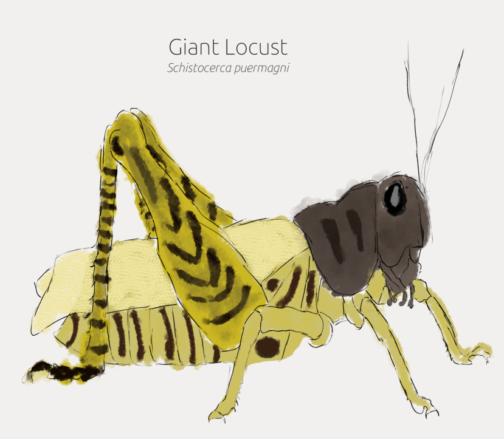

The giant locust is the largest decendant of the humble locusts which have grown massive to monopalise the grass upon Physignathus. They are the most common land animal as of 5000 years PS and are very succsessfull. They use their swarming abilites to ravage the young grasslands and then leave nothing for the rest of the wildlife. But the giant locusts are also young and nieve and if a new preditor takes advantage of the new food source they will be powerless to stop them. For now though the giant locust is sitting atop its throne with nothing to stop it wreking ecosystems and starving millions.

As a result of their destructive but selective feeding habits they have allowed new ground cover to appear like moss and ferns which has allowed the evolution of some very strange biomes only seen at this time. As giant locusts only consume grass they have caused large patches of open land to occour on our young Phsignathus which are quickly taken by the plants which werent eaten alive and then create the unique ancient plateu which is a biome endemic to Physignathus. It comprises of primarialy a moss carpet with ocasonal ferns springing out to break up the shape. It is one of the only things which benifits from the giant locusts and are most likely not going to be a permenant feature on Physignathus.You can now go back to the Lacerticine